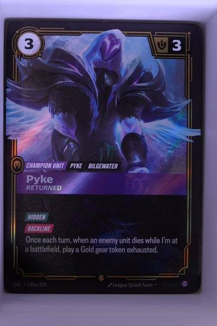

145a/219 Unleashed Riftbound Epic Foil
Captured8 Hidden3 Sent7

Pane 820
Pane 410
Red: copies are live and the reading is fresh.
Amber: the reading is old. The age that turns it amber is the owner's call.
No reading: a quiet dash, never a red 0.